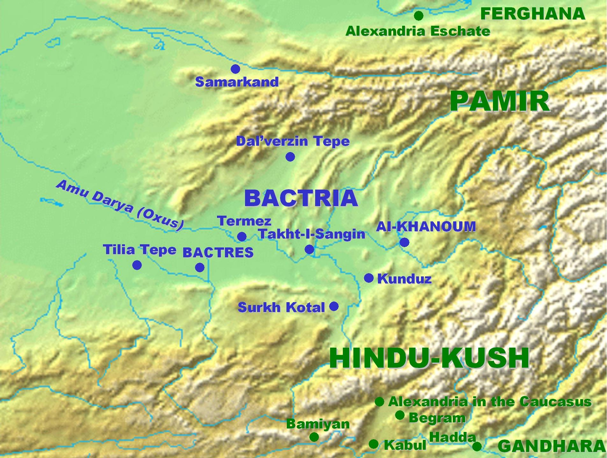

The Oxus River, which is now known as the Amu Darya is a large river that goes through Central Asia and Afghanistan. It is formed by the merging of two smaller rivers, the Vakhsh and the Panj rivers, which then flows into the southern remnants of the Aral Sea. In the medieval period, it was known as the Jihun.(May, 85) The Oxus River is measured to be 1,500 miles long, with a drainage basin measured to be 206,464 square miles in area. Travelers started to settle along the river during the 5th century, which led to very agriculturally successful cities and towns. The source of this river has been debated to be many different entities, including the Syr Kul lake, Curzon’s Ice Cave, and the deep valley of the Chelab river.[1]
In Central Asia in the 6th and 7th centuries, the Oxus River was a hub for Nestorian missionaries looking to educate the residents living in the regions located near the river. The missionaries were sent on these missions by Nestorian bishop, Mar Abha I. These regions were settling places for groups of people such as Ephthalites and Turks, which were the residents that the missionaries traveled to educate during the 6th century. By the 7th century, the missionaries were successful and active in the regions around the Oxus basin. With this advantage, they were able to help the Central Asian nomads in their journey of cultural development.[2]
The Il-Khanate was a product of the military expansion that occurred during the reign of the Great Khan. In the time period of the Il-Khanate, the Oxus River represented the eastern border of the autonomous khanate. This stretched from the Oxus River to the Euphrates River in the west as described by 14th century Persian sources. In order to protect their territory from enemy attack, the il-khans set up frontier armies along the Oxus River in Khurasan.[3] This map illustrates the path of the river through Bactria.[3]
[1]Bill Colegrave (2012)
[2]Su-il, J. (2017).
[3]May, T. (2016).
Hansen, Valerie. The Silk Road: A New History with Documents (Oxford, 2016).
Kim Hodong, “The Unity of the Mongol Empire and Continental Exchanges over Eurasia,” Journal of Central Eurasian Studies 1 (2009), pp. 1–17.